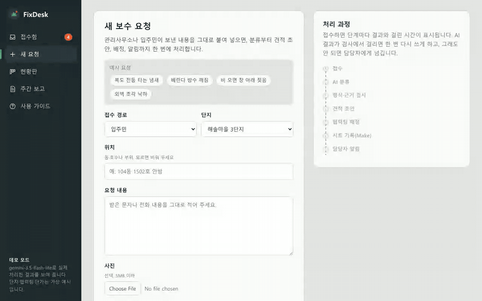
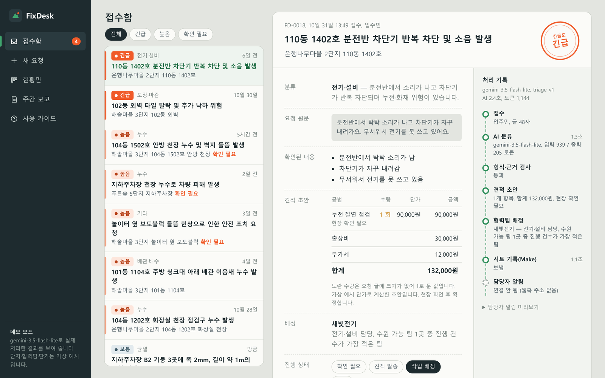
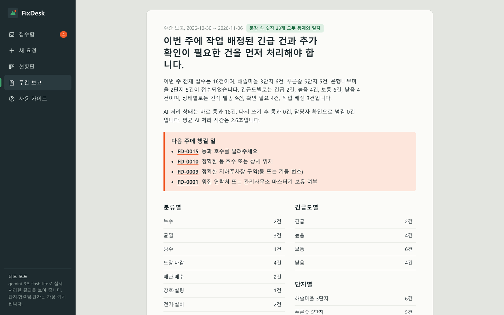
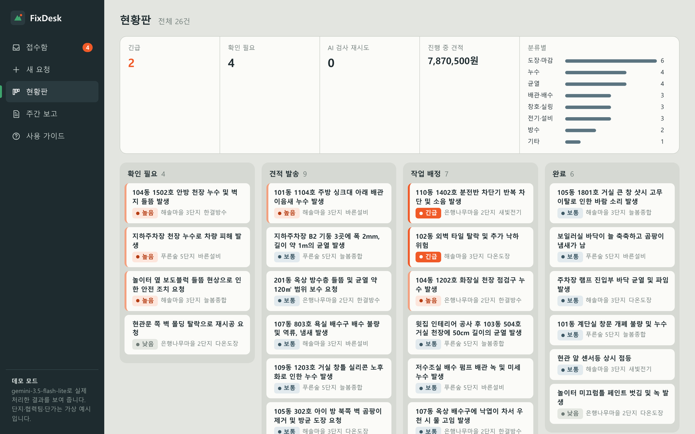

아파트 보수 요청 문자를 붙여 넣으면 AI가 하자 종류와 긴급도를 정하고, 견적 초안, 협력팀 배정, 시트 기록, 주간 보고까지 이어서 처리하는 업무 자동화 도구
| 기간 | 2026.11 |
| 인원 | 개인 |
| 데이터 | 정답(하자 종류·긴급도)을 붙인 예시 보수 요청 30건, 가상 단지 3곳 · 협력팀 5곳 · 공법 목록 22개 (모두 가상의 예시) |
| 주요 기술 | Python, FastAPI, Pydantic, Google Gemini API(gemini-3.5-flash-lite, 구조화 출력), SQLite, Make, Google Sheets, HTML·CSS·JavaScript, pytest |
| 역할 | 프로젝트 방향과 범위 설정, 결과 검토. 설계·코드·분석은 생성형 AI(Claude)와 함께 진행 |
| 링크 | 데모 사이트 · sung-ju-park/fixdesk |

아파트 유지보수 회사의 접수 담당자는 "안방 천장에서 물이 떨어지고 벽지가 들떴어요" 같은 문자를 받으면, 하자 종류 분류 → 긴급도 판단 → 공법을 골라 견적 초안 작성 → 협력팀 배정 → 접수 대장 기록 → 주간 보고를 차례로 손으로 처리합니다. 이 흐름을 한 번에 이어 주되, AI가 그럴듯한 숫자를 지어내 견적이 틀어지는 일은 막는 것이 목표였습니다.

LLM은 문장을 읽고 판단하는 일은 잘하지만, 요청 글에 없는 "3층", "12㎡" 같은 숫자를 자연스럽게 지어내기도 합니다. 보수 견적에서는 이런 숫자가 바로 금액 오류가 됩니다. 그래서 일을 나눴습니다. 표현이 제각각인 글을 읽고 분류하는 일은 AI가 하고, 틀리면 곤란한 계산과 결정은 코드가 합니다.
| AI | 하자 종류 · 긴급도 판단, 사실 요약, 공법 고르기(정해진 목록 안에서만), 되물을 정보, 주간 보고 문장 |
| 코드 | 견적 금액 계산, 협력팀 배정, 위험 표현("타는 냄새", "차단기가 내려감") 감지 시 긴급 처리, 주간 통계와 다음 주에 챙길 건 고르기 |
AI 답이 들어오면 코드가 네 단계로 확인합니다.
크기가 적혀 있지 않으면 수량을 1로 두고 "현장 확인 필요"라고 표시하게 했습니다. 위험 표현이 있으면 AI 판단과 상관없이 긴급으로 올리고, 그 이유를 처리 기록에 남깁니다. 주간 보고는 통계를 코드가 계산하고 AI는 문장만 씁니다. 문장 속 숫자나 접수번호가 통계에 하나라도 없으면 AI 문장을 버리고 정해진 템플릿 문장을 씁니다.

정답을 붙인 예시 요청 30건을 실제 Gemini로 처리해 채점했습니다. 첫 실행 결과를 하나씩 확인하다가 세 가지 문제를 찾았습니다.
| 검사 오탐 | AI가 위치에 "푸른숲 5단지"라고 쓰면, 검사가 단지 이름의 "5"를 지어낸 숫자로 보고 멀쩡한 답 3건을 다시 쓰게 함 → 단지 이름과 위치 칸의 숫자도 근거로 인정 |
| 규칙 역효과 | "곰팡이가 점점 넓어지고"를 피해 확대로 보고 긴급도를 올려 정답이던 1건을 오히려 틀리게 만듦 → 곰팡이 · 페인트처럼 마감재가 번지는 경우는 규칙에서 제외 |
| 보고서 | 주간 보고가 통계 숫자를 다시 읽어 주는 수준 → 확인이 필요한 건과 아직 안 끝난 긴급 건을 코드가 골라 주고, AI가 "다음 주에 챙길 일"로 정리 |
2차 실행에서 남은 오답 2건(샷시 고무 빠짐, 센서등 계속 켜짐)은 모두 정답보다 한 단계 높게 본 경우였고, 위험한 요청을 덜 급하게 본 경우는 없었습니다.
접수 결과를 Make의 Custom webhook으로 보내고, Make 시나리오가 Google Sheets에 한 줄씩 추가합니다(접수번호, 접수시각, 단지, 위치, 분류, 긴급도, 요약, 배정, 견적합계, 확인필요). 평가 30건을 실행하면서 30줄이 모두 시트에 기록되는 것까지 확인했습니다. 연결 중에 미리 만들어 둔 시트에 Make가 쓰지 못하는 권한 오류(403)가 났는데, Make에서 시트를 직접 만들게 해서 해결했습니다.

한계 — 평가 데이터가 30건뿐이고, 이 30건을 보면서 규칙과 검사를 고쳤기 때문에 처음 보는 요청에서는 성능이 더 낮을 수 있습니다. 단지 · 협력팀 · 단가는 가상이고 견적은 현장 확인 전 초안입니다. 사진은 Gemini에 함께 보내지만 평가 데이터에는 사진이 없어, 사진이 판단에 얼마나 도움이 되는지는 측정하지 않았습니다. 로그인과 여러 명이 동시에 쓰는 상황은 다루지 않았습니다.